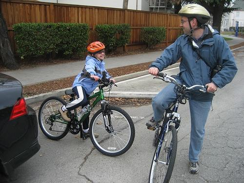
0.602030
0.633117
0.669627
0.679516
0.680860
0.681387

0.684073
0.687348
0.692657
0.698940
| Target image 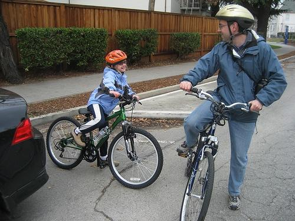 | 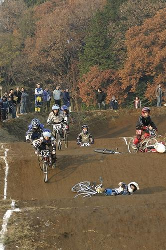 0.602030 | 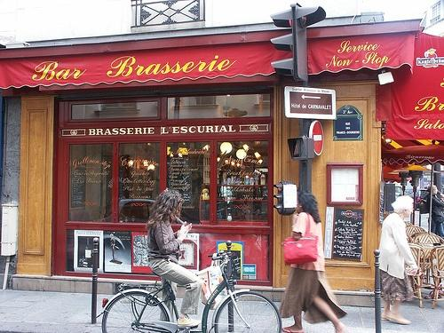 0.633117 | 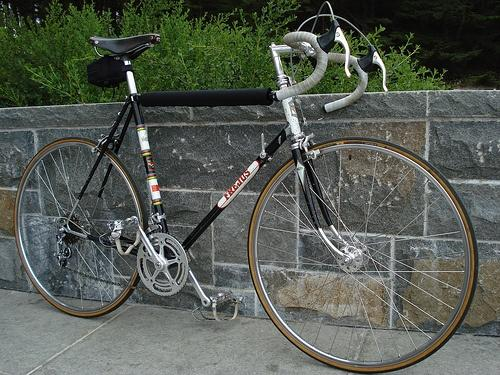 0.669627 | 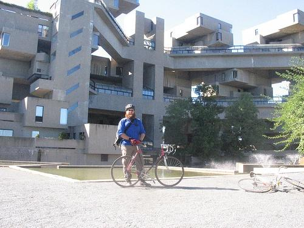 0.679516 | 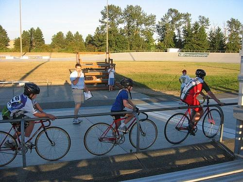 0.680860 | 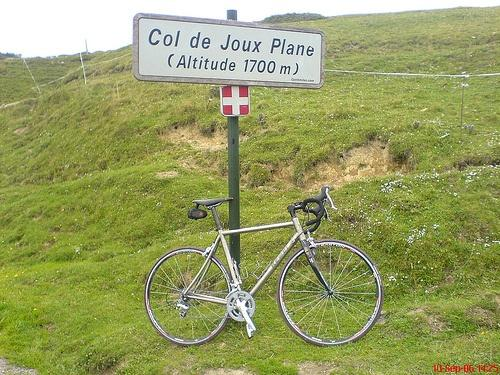 0.681387 | 0.684073 | 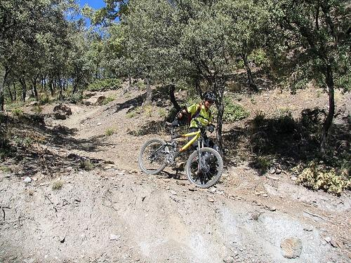 0.687348 | 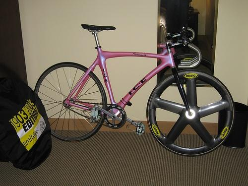 0.692657 | 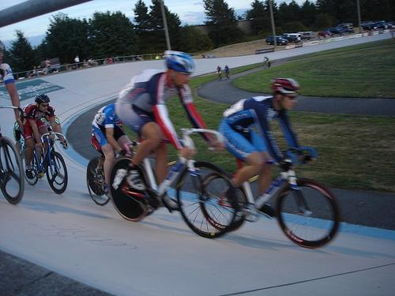 0.698940 |
| Target image 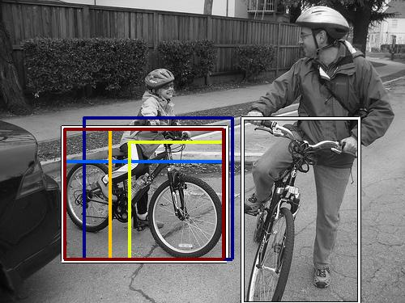 | 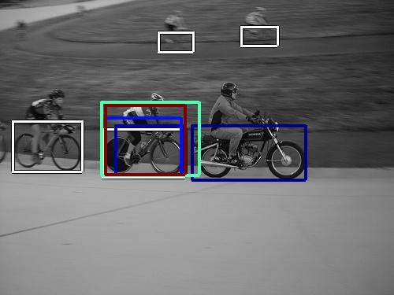 19097.640625 | 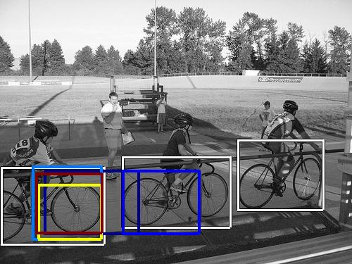 13823.029297 | 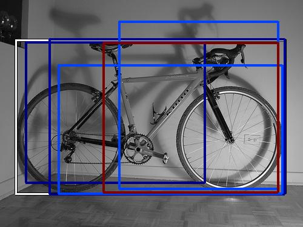 12745.026367 |  12433.199219 | 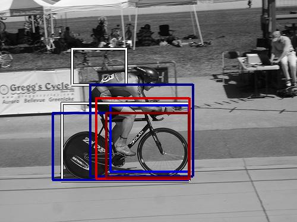 12142.151367 | 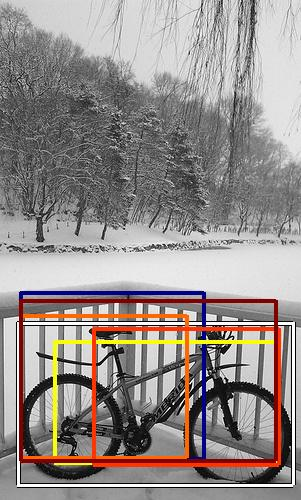 11760.740234 | 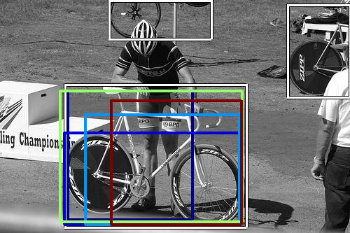 11491.644531 | 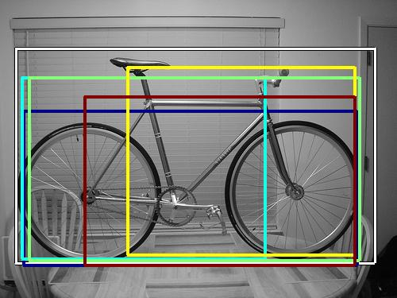 10545.013672 | 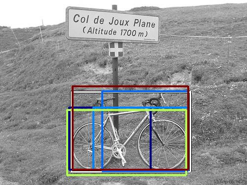 9888.630859 | 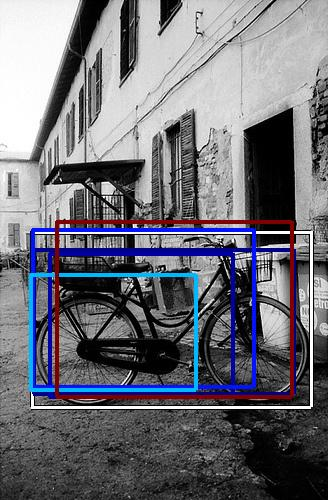 9204.222656 |
| Target image 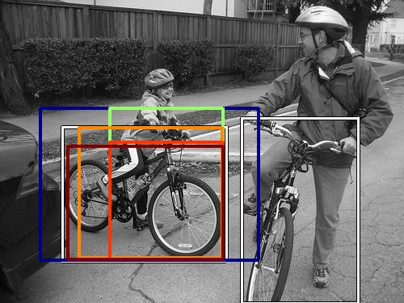 | 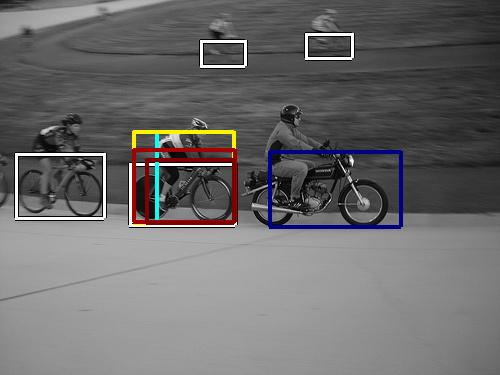 226503.656250 | 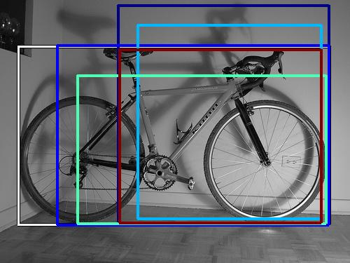 131886.109375 | 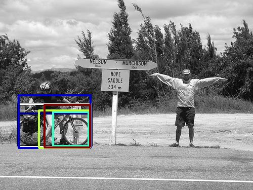 126644.554688 | 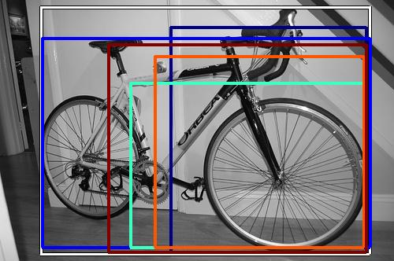 113208.257812 | 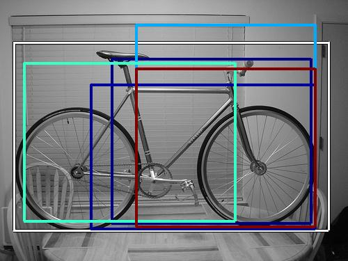 111313.656250 | 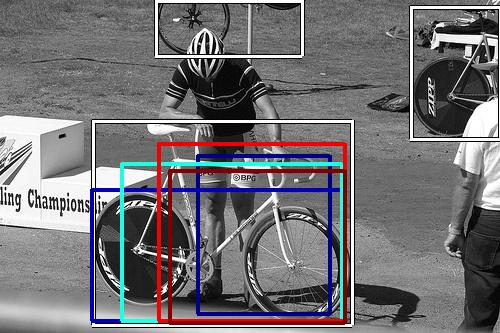 90998.312500 | 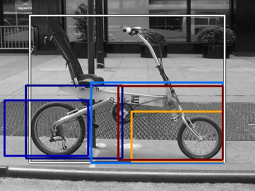 86610.320312 | 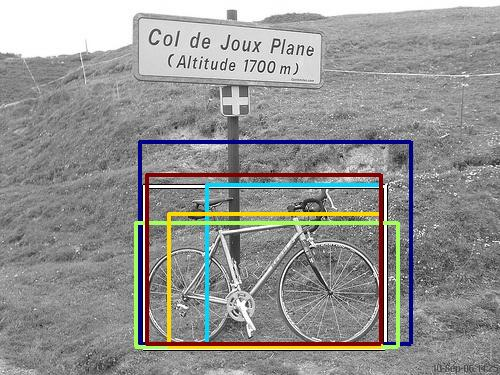 86609.914062 | 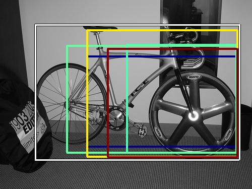 86401.867188 | 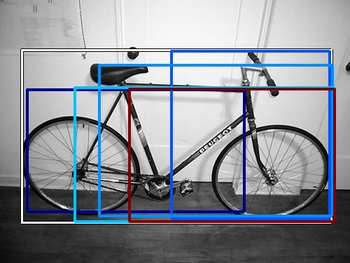 78942.937500 |
| Target image 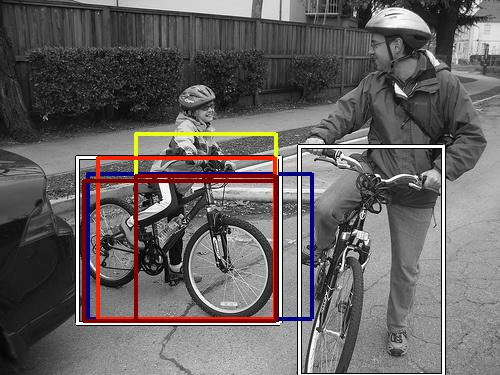 | 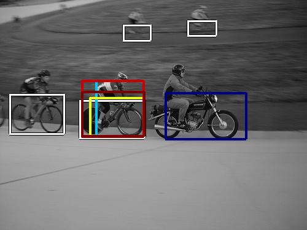 37211.875000 | 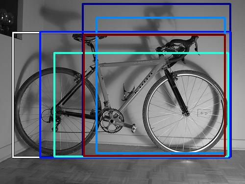 28752.802734 | 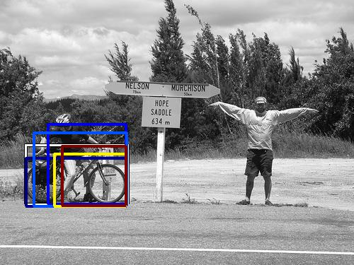 20091.519531 | 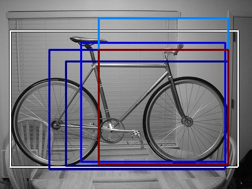 19860.132812 | 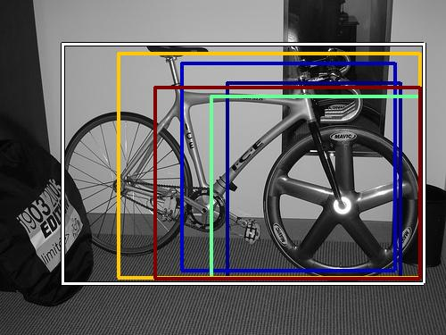 15878.015625 | 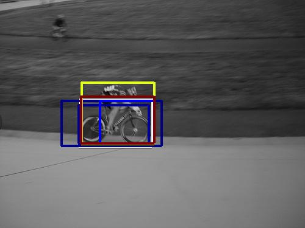 15809.339844 | 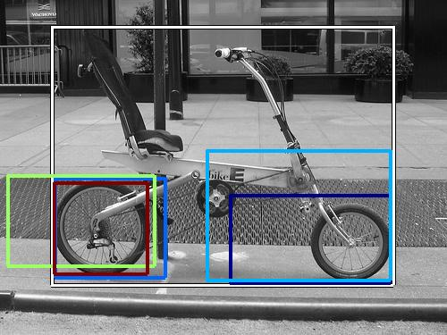 15341.804688 |  14389.037109 | 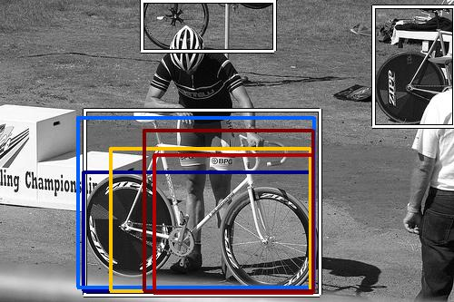 14097.455078 | 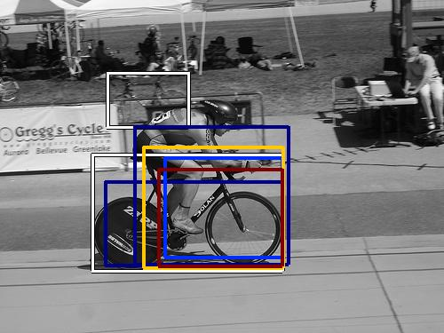 13826.019531 |
| Target image 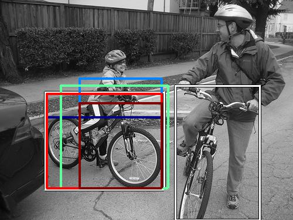 | 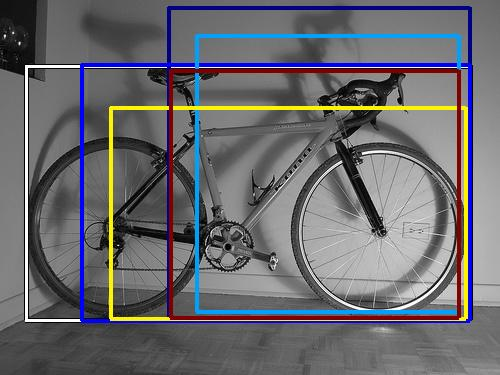 292606.562500 | 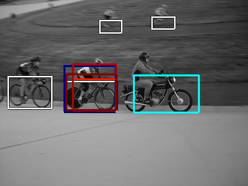 283086.218750 | 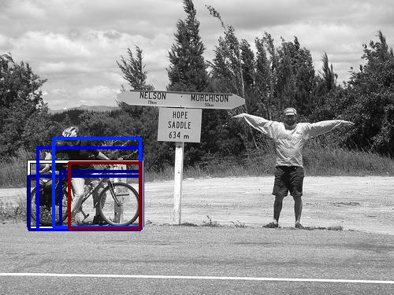 196186.921875 | 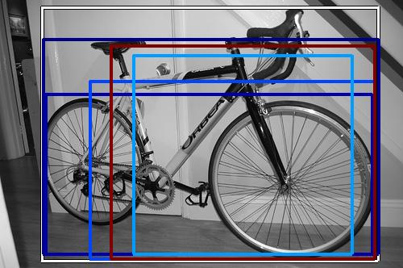 182159.453125 | 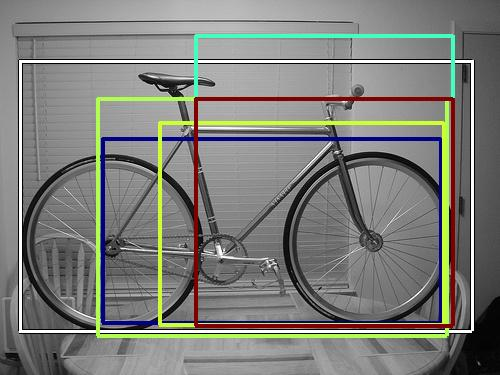 168439.453125 | 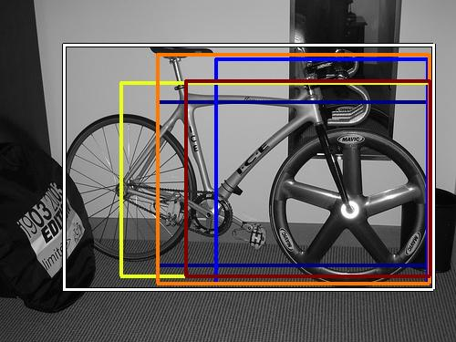 165173.250000 | 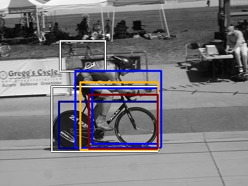 163177.031250 | 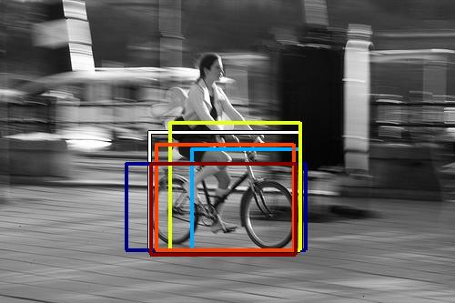 150700.484375 | 148991.234375 | 139520.906250 |